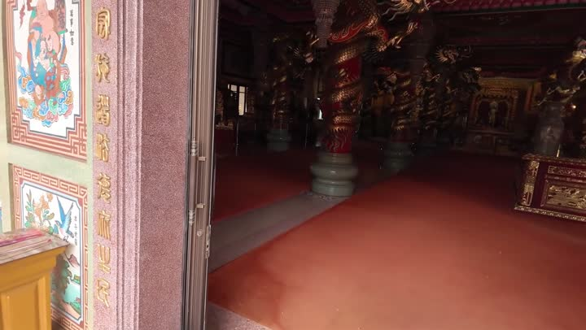
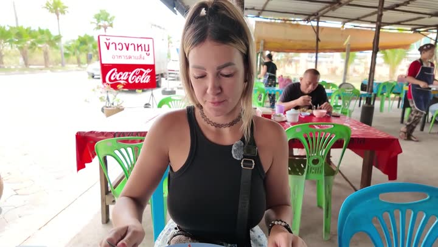
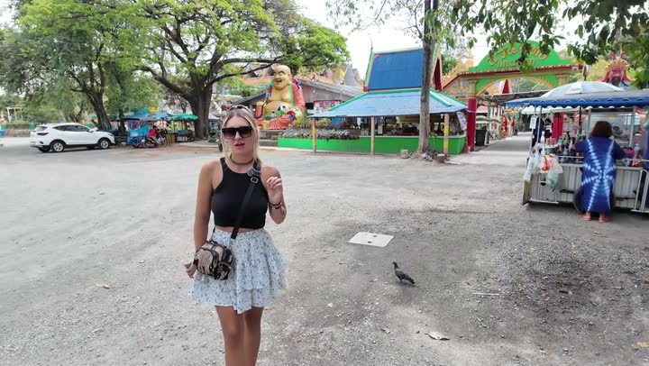
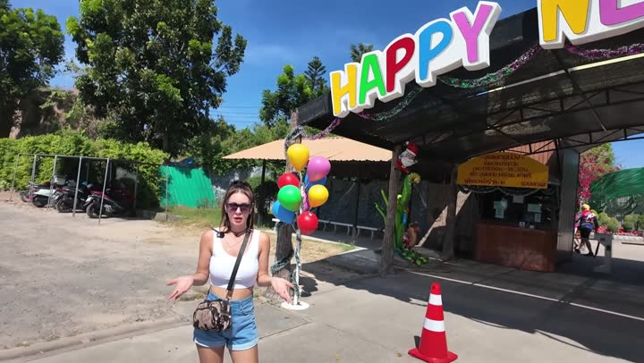
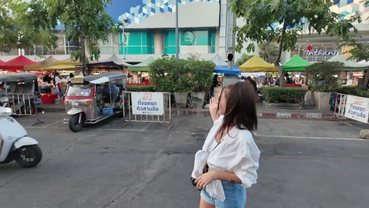

Атлас мест · Таиланд
Си-Рача — наши места
10 мест3 роликов10 советуем
Наш топ-10
 Зоопарк Сири Паркзоопарк · 👍 Советуем · дёшево
Зоопарк Сири Паркзоопарк · 👍 Советуем · дёшево
Храм Санчаунаджахрам · 👍 Советуем
Китайский храм Бога Начахрам · 👍 СоветуемОткрытый зоопарк Кхао Кхеозоопарк · 👍 Советуем Смотровая Кхао Пхра Кхрусмотровая · 👍 Советуем · дёшево
Смотровая Кхао Пхра Кхрусмотровая · 👍 Советуем · дёшево
Храм Ада и Рая Саенсукхрам · 👍 Советуем · дёшевоТайская кафешкакафе и ресторан · 👍 Советуем · дёшево Сирачазоопарк · 👍 Советуем · дёшево
Сирачазоопарк · 👍 Советуем · дёшево
Зеркальный шар на горе Кхао Пхра Кхрудостопримечательность · 👍 Советуем · дёшево
Торговый центр Пасифик Паркторговый центр · 👍 Советуем · дёшевоС детьми — 5
Красивые виды — 3
Бюджетно — 7
Зоопарк Сири Паркзоопарк · 👍 Советуем · дёшевоСмотровая Кхао Пхра Кхрусмотровая · 👍 Советуем · дёшевоТайская кафешкакафе и ресторан · 👍 Советуем · дёшевоХрам Ада и Рая Саенсукхрам · 👍 Советуем · дёшевоСирачазоопарк · 👍 Советуем · дёшевоЗеркальный шар на горе Кхао Пхра Кхрудостопримечательность · 👍 Советуем · дёшевоТорговый центр Пасифик Паркторговый центр · 👍 Советуем · дёшевоВсе места — 10
Достопримечательности — 5
- Зеркальный шар на горе Кхао Пхра Кхру 👍 Советуем
- Китайский храм Бога Нача 👍 Советуем
- Смотровая Кхао Пхра Кхру 👍 Советуем
- Храм Ада и Рая Саенсук 👍 Советуем
- Храм Санчаунаджа 👍 Советуем
Животные — 3
- Зоопарк Сири Парк 👍 Советуем
- Открытый зоопарк Кхао Кхео 👍 Советуем
- Сирача 👍 Советуем
Еда — 1
- Тайская кафешка 👍 Советуем
Рынки и магазины — 1
- Торговый центр Пасифик Парк 👍 Советуем
Атлас мест канала «Юля и Дима / БЕЗ ТОРМОЗОВ». Описания составлены по нашим роликам; цены — на момент съёмки. Нашли неточность — напишите нам в Telegram.